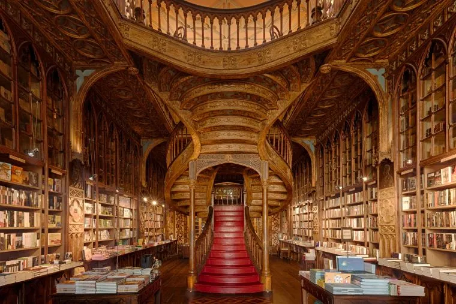
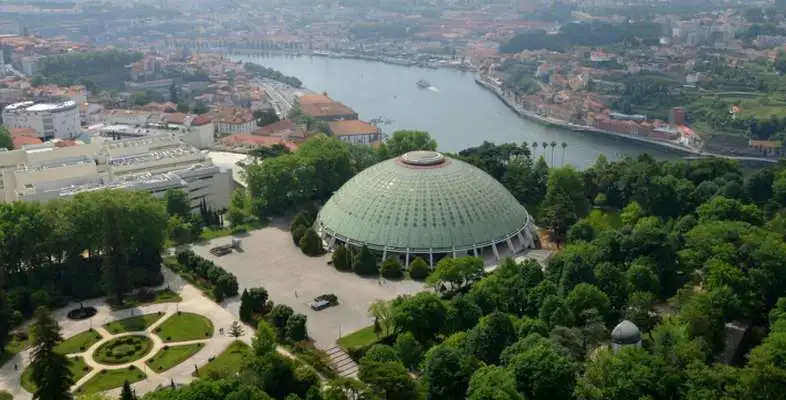
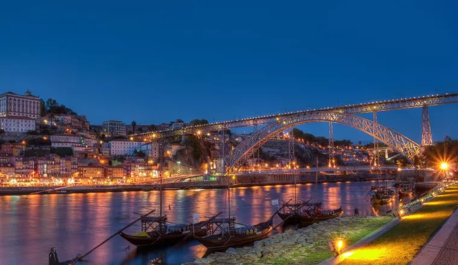
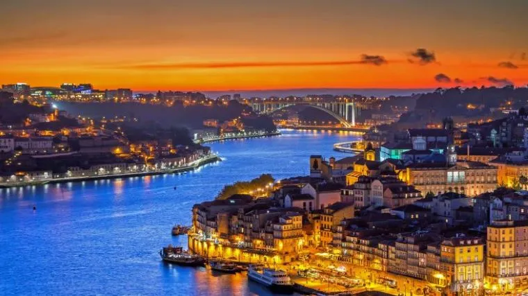
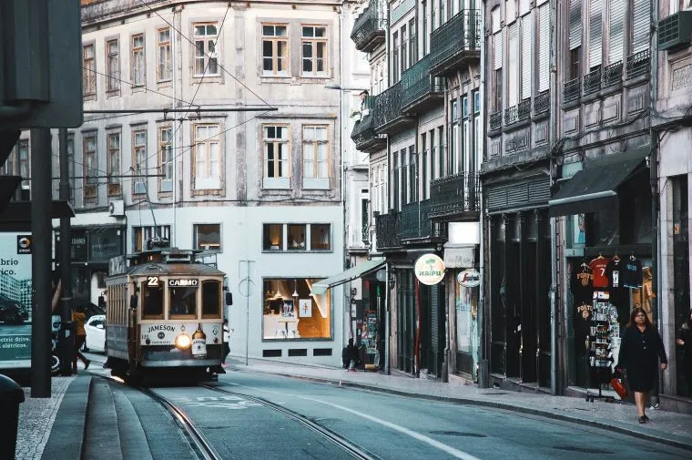
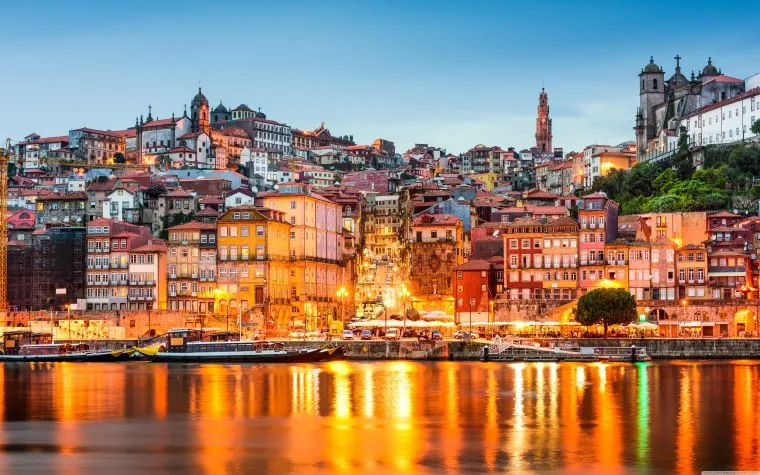

History
Porto, city and port, northern Portugal. The city lies along the Douro River, 2 miles (3 km) from the river’s mouth on the Atlantic Ocean and 175 miles (280 km) north of Lisbon. World-famous for its port wine, Porto is Portugal’s second largest city and is the commercial and industrial centre for the zone north of the Mondego River. The historic centre of Porto was designated a UNESCO World Heritage site in 1996.
Fact:
The City's nickname is Invicta. Invicta means invincible in Portuguese. This nickname is coming from the 19th Century Portuguese civil war, when Porto was never conquered and even survived a siege that lasted more than a year.
Gallery






Demographics
Porto
Country: Portugal
- Region: North
- Subregion: Big Porto
- District: Porto
Area
- Municipality: 41.42 km² (15.99 sq mi)
- Elevation: 104 m (341 ft)
Population
- Municipality: 248,769
- Density: 5,596.3/km² (14,494/sq mi)
- Urban: 1,375,679
- Metropolitan area: 1,802,664